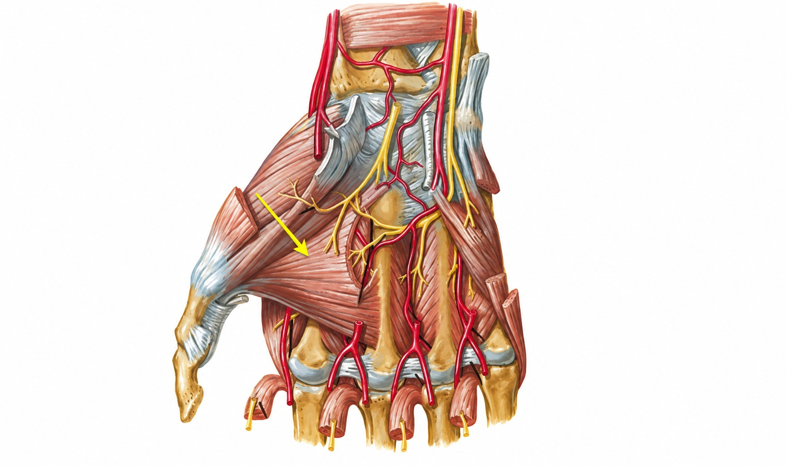
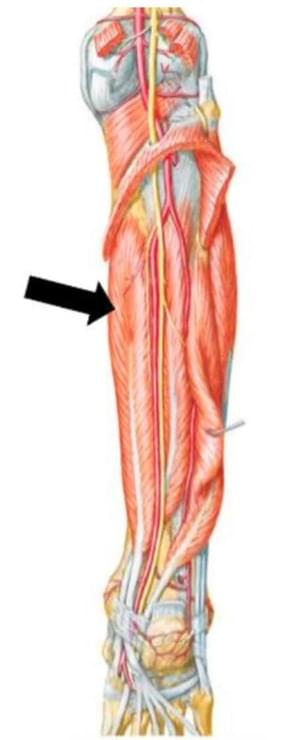

Destino: o músculo profundo assinalado na imagem. Arraste para começar a rota.
2/6
OrtoQuestões
Câmera ao vivo do trecho

OrtoQuestões Simulados · anatomia da mão
O músculo profundo indicado na figura, que converge para a base ulnar do polegar, é inervado pelo
Anervo mediano.Bramo superficial do radial.Cramo profundo do nervo ulnar.Dramo superficial do nervo ulnar.
Comente a sua letra antes de seguir a rota
3/6
No canal de GuyonPegue a saída do ramo profundo
Rota completaDo punho até o polegar, pelo lado ulnar
Siga pelo nervo ulnarao lado da artéria ulnar, por fora do túnel do carpo.
Entre no canal de Guyonentre o pisiforme e o hâmulo do hamato.
Na bifurcação, pegue o ramo profundoO motor. O superficial segue para a pele do quarto e do quinto dedos.
Contorne o hâmulo do hamatoe passe pela região hipotenar, comandando os músculos do dedo mínimo.
Cruze a palma pelo plano profundojunto ao arco palmar profundo, dando os interósseos, até o adutor do polegar.
4/6
Você chegou: ramo profundo do ulnar
RESPOSTA C
Adutor do polegar· plano profundo
Duas cabeças, oblíqua (capitato, 2º e 3º metacarpos) e transversa (3º metacarpo), convergem para a base ulnar da falange proximal do polegar. Ele fica no fundo da palma, exatamente onde o ramo profundo do ulnar termina. Músculo do polegar não é sinônimo de mediano.
5/6
As outras rotas levam para longe
A
Nervo medianooutra avenidaPelo ramo recorrente motor, comanda abdutor curto e oponente do polegar. O adutor fica fora desse território.
B
Ramo superficial do radialoutro bairroÉ sensitivo: pele do dorso radial da mão. Não comanda o adutor.
D
Ramo superficial do ulnara outra saídaSaiu no Guyon para a pele. Seu único motor é o palmar curto.
Rota recalculada
Dois ramos do mesmo nervo, destinos diferentes. Nos stories de hoje, o GPS vai para a perna: escolha a faixa certa.
6/6
Acidente no trecho: se lesar
Pinça fraca entre polegar e indicador: o adutor não segura.
O polegar perde força para aduzir e para fletir a metacarpofalângica, as duas ações do adutor.
Lesão depois da bifurcação: sensibilidade preservada, porque o ramo profundo é só motor.
Para a prova
Adutor do polegar: ramo profundo do ulnar. Abdutor curto e oponente: ramo recorrente do mediano.
Treine grátis
Crie sua conta no Orto Questões
Provas oficiais comentadas e anatomia nos OrtoQuestões Simulados, por engenharia reversa da prova. ortoquestoes.com.br
1/3
Rota de hoje: a pernaEscolha a faixa certa
Três pistas lado a lado. Qual a seta aponta?
Câmera ao vivo do trecho

TEOT/TARO · questão real
Na imagem a seguir, o músculo indicado pela seta é o:
Afibular longoBtibial posteriorCflexor longo do háluxDflexor longo dos dedos
A rota até a resposta está no próximo story
2/3
Você chegou: flexor longo dos dedos
RESPOSTA D
Por que esta faixaVista posterior, sem gastrocnêmio e sóleo
Medial, junto à tíbiao flexor longo dos dedos nasce da face posterior da tíbia.
No centro, mais fundoo tibial posterior, coberto pelos flexores.
Lateral, junto à fíbulao flexor longo do hálux.
Atrás do maléolo medialDo maléolo para trás, cada um na sua faixa
Ttibial posterior
Dflexor longo dos dedos
AVNartéria, veias e nervo tibiais
Hflexor longo do hálux
Tom, Dick and very nervous Harry
3/3
As outras faixas levam para longe
A
Fibular longooutro compartimentoMora no compartimento lateral.
B
Tibial posteriorpista do centroO mais profundo, coberto pelos flexores.
C
Flexor longo do háluxpista lateralNasce na face posterior da fíbula.
Para a prova
Profundo e medial, na face posterior da tíbia: flexor longo dos dedos. Na planta, ele cruza o do hálux no nó de Henry.